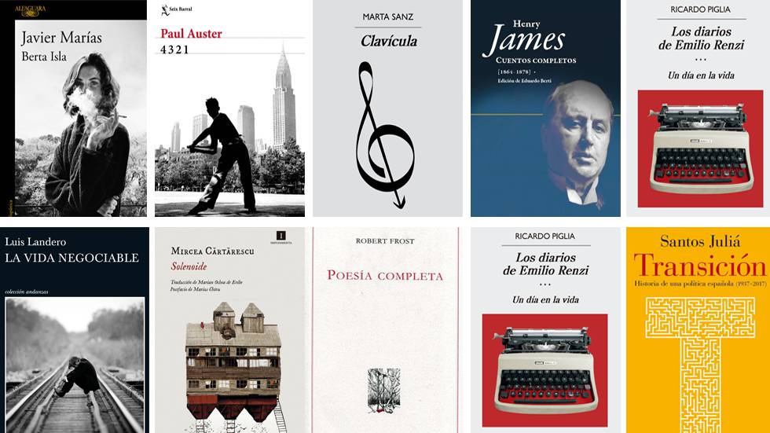

LOS 10 MEJORES LIBROS DE TODOS LOS TIEMPOS
- La Biblia
- Cien años de soledad, de Gabriel García Márquez. 469 puntos
- El señor de los anillos (Trilogía), de J. R. R. Tolkien. 389 puntos
- 1984, de George Orwell. 382 puntos
- Un mundo feliz, de Aldous Huxley. 374 puntos
- Orgullo y prejuicio, de Jane Austen. 341 puntos
- Crimen y castigo, de Fiódor Dostoyevski. 324 puntos
- Lolita, de Vladimir Nabokov. 318 puntos
- Ulises, de James Joyce. 311 puntos
- Madame Bovary, de Gustave Flaubert. 310 puntos
- En busca del tiempo perdido, de Marcel Proust. 304 puntos
